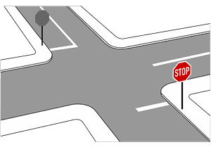

Zeichen 294
Haltlinie

3 Tatbestände dazu
141211Sie hielten nicht an der Haltlinie (Zeichen 294).
10 €
141730
Sie hielten trotz Rotlicht nicht an der Haltlinie (Zeichen 294) und gefährdeten +) dadurch Andere.
70 €1 PunktA-Verstoß
141731
Sie hielten trotz Rotlicht nicht an der Haltlinie (Zeichen 294). Es kam zum Unfall.
85 €1 PunktA-Verstoß